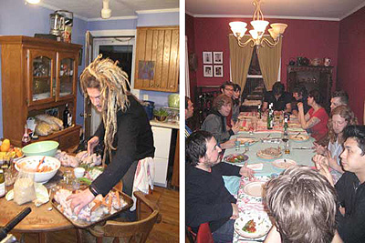

Kitchen
Cooking Up a Storm!
As you may know, I have been working for years to get a band into the kitchen to do some real cooking. The reality has been that I've only had access to touring bands between their sound check and set, which means I've been doing a lot of talking about cooking with rockstars.
I'm very excited to announce that my dry spell has ended, and now it seems that everybody wants to do some cookin'! I've already cooked with Nada Surf and Dresden Dolls and have several more (top secret) cooking episodes in the works.
Nada Surf's Daniel Lorca
When I first invited Nada Surf to be on the show (I'm quite a fan of their new release, Lucky), I was told that Daniel was the guy I wanted to talk to. Then Daniel emailed his response:
I nearly cried!
I had the pleasure of spending a crisp, Spring day in Portsmouth, NH cooking and chatting with Daniel as he prepared a gourmet, sit-down dinner for 28 pals (Matthew and Ira from his band, their manager and road crew, the bands The Jealous Girlfriends and Minus Scale, our lovely host Jo Lenardi from Barsuk Records, a gang of her local friends and coworkers, and last but not least, the Cooking with Rockstars crew).


The menu consisted of an arugula salad with goat cheese, smoked tomatoes, home-made tomato jam, and grilled avocado (!) followed by tarragon cornish hens with a cognac cream sauce loaded with chanterelles and grapes, and wild rice with grilled ramps (wild garlicky leeks). Jo prepared a meringue/whipped cream/berry dessert that was the size of a raft.
We left that night (technically, early the next morning) with full bellies, new cooking tips, and nearly 5 hours of footage. I'm considering renaming the show "Cooking with Nada Surf". Lucky, indeed!
The Dresden Doll's Brian Viglione
The very next day, I headed to Jamaica Plain, MA to spend the afternoon cooking with Brian of The Dresden Dolls. Brian was extremely excited about doing some cooking for the show. It was my first time meeting him, but after a whole day cooking together, we were BFF!
Brian prepared two dishes: The first, the Viglione Family Sauce, is one that he knows like the back of his hand and brings back a rush of childhood memories for him. The other, Kahlua Cupcakes, is one that he was trying out for the first time after tasting one at a recent dinner party (says Brian,"you know when it makes your eyes roll back in your head that it's a good cupcake!"). It was a nice balance of old and new, and everything turned out de-LISH!
I can't wait to show you the results, but first I've got nearly 9 hours of awesome video to log and edit. Be careful what you wish for!

Categories
Now Playing
Cool Stuff
Links to stuff that you might like too.
- I Like Food, Food Tastes Good
 It's a real cookbook with real recipes from real indie rockers. No, I didn't write it (Kara Zuaro is the author), but if you like this site, this book is a great read, even if you don't spend much time in the kitchen.
It's a real cookbook with real recipes from real indie rockers. No, I didn't write it (Kara Zuaro is the author), but if you like this site, this book is a great read, even if you don't spend much time in the kitchen.- LiamLynch.net
- Director, producer, and musician, Liam Lynch, is also my brother. Check out his site and definitely don't miss his amazing and hilarious podcast, Lynchland (also available through iTunes).
- Pitchfork
- I'm probably not telling you something you don't already know, but this publication sets the standard for new music reviews.
- KEXP
- I've found out about more new bands by listening to KEXP (based in Seattle) than through any other source. I love you, John in the Morning.
- Chow.com
- I've been a fan of Chow since it first appeared in print. Now an online resource, this my first stop for all things food.
- Serious Eats
- A foodie/blog community that is another place to hang out if you're looking for food ideas and recommendations.
All content copyright © Jennifer Robbins and Jenville Productions
Comments
Hey!
It was a pleasure meeting you guys in New Hampshire — it was definitely a highlight of the whole tour. Any idea when the segment will be up?
Carly
Cupcake Maker / Merch Girl
Hi Carly
It was great meeting you as well! The Nada Surf footage is in editing now, and I hope to have the first of several episodes from that day up in the next week or two. There were about 5 hours of video to log and sort through, so it’s been quite a challenge picking the best 5 minutes of the day. Thanks for stopping by.
Nada Surf
I love Nada Surf. Turns out they’re multi-talented—that was quite a dinner!